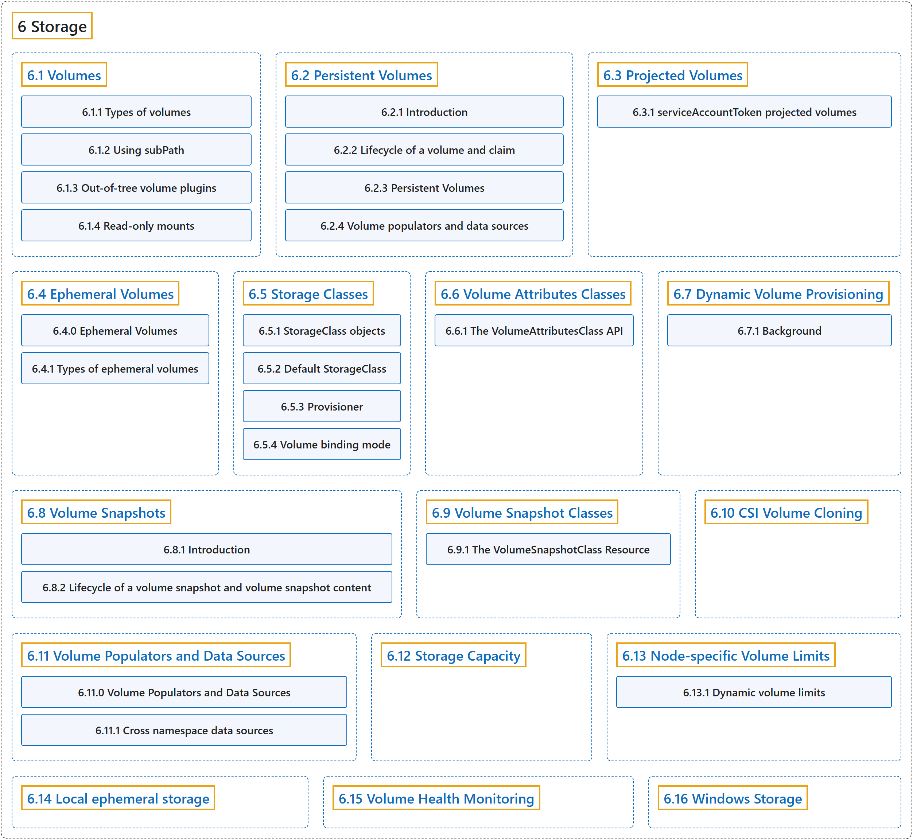

6 Storage
Classification

Glossary
| Term | Definition | 中文翻译 | Source |
|---|---|---|---|
| 6 Storage 存储 |
"Ways to provide both long-term and temporary storage to Pods in your cluster." | 提供长期和临时存储给集群中的 Pod 的方式。 | The Kubernetes Authors, n.d.-h, "Storage", para. 1 |
| 6.1 Volumes 卷 |
"Kubernetes volumes provide a way for containers in a Pod to access and share data via the filesystem." | Kubernetes 卷 为 Pod 中的容器提供一种方式，用来通过文件系统访问和共享数据。 | The Kubernetes Authors, n.d.-p, "Volumes", para. 1 |
| 6.2 Persistent Volumes 持久卷 |
(context) "Managing storage is a distinct problem from managing compute instances." | （语境）管理存储是一个与管理计算实例截然不同的问题。 | The Kubernetes Authors, n.d.-f, "Introduction", para. 1 |
| 6.3 Projected Volumes 投射卷 |
"A projected volume maps several existing volume sources into the same directory." |
projected 卷会把若干现有卷源映射到同一个目录。 |
The Kubernetes Authors, n.d.-g, "Introduction", para. 1 |
| 6.4 Ephemeral Volumes 临时卷 |
(context) "Some applications need additional storage but don't care whether that data is stored persistently across restarts." | （语境）有些应用需要额外的存储，但不在乎这些数据在重启后是否持久保存。 | The Kubernetes Authors, n.d.-c, "Ephemeral Volumes", para. 2 |
| 6.5 Storage Classes 存储类 |
"A StorageClass provides a way for administrators to describe the classes of storage they offer." | StorageClass 提供一种方式，让管理员描述他们提供的存储类别。 | The Kubernetes Authors, n.d.-j, "Storage Classes", para. 2 |
| 6.6 Volume Attributes Classes 卷属性类 |
"A VolumeAttributesClass provides a way for administrators to describe the mutable "classes" of storage they offer." | VolumeAttributesClass 提供一种方式，让管理员描述他们提供的可变存储类别。 | The Kubernetes Authors, n.d.-k, "Volume Attributes Classes", para. 3 |
| 6.7 Dynamic Volume Provisioning 动态卷供应 |
"Dynamic volume provisioning allows storage volumes to be created on-demand." | 动态卷供应允许按需创建存储卷。 | The Kubernetes Authors, n.d.-b, "Dynamic Volume Provisioning", para. 1 |
| 6.8 Volume Snapshots 卷快照 |
"In Kubernetes, a VolumeSnapshot represents a snapshot of a volume on a storage system." | 在 Kubernetes 中，VolumeSnapshot（卷快照）代表存储系统上一个卷的快照。 | The Kubernetes Authors, n.d.-o, "Volume Snapshots", para. 1 |
| 6.9 Volume Snapshot Classes 卷快照类 |
"VolumeSnapshotClass provides a way to describe the "classes" of storage when provisioning a volume snapshot." | VolumeSnapshotClass 提供一种方式，在供应卷快照时描述存储的类别。 | The Kubernetes Authors, n.d.-n, "Introduction", para. 1 |
| 6.10 CSI Volume Cloning CSI 卷克隆 |
"The CSI Volume Cloning feature adds support for specifying existing PVCs in the dataSource field to indicate a user would like to clone a Volume." |
CSI 卷克隆功能支持在 dataSource 字段中指定现有的 PVC，表示用户想要克隆一个卷。 |
The Kubernetes Authors, n.d.-a, "Introduction", para. 1 |
| 6.11 Volume Populators and Data Sources 卷填充器与数据源 |
(context) "When you create a PersistentVolumeClaim, the volume that Kubernetes provisions for it normally starts empty." | （语境）当你创建 PersistentVolumeClaim 时，Kubernetes 为它供应的卷通常一开始是空的。 | The Kubernetes Authors, n.d.-m, "Volume Populators and Data Sources", para. 2 |
| 6.12 Storage Capacity 存储容量 |
"Storage capacity is limited and may vary depending on the node on which a pod runs:" | 存储容量是有限的，并且可能因 Pod 所在的节点而不同： | The Kubernetes Authors, n.d.-i, "Storage Capacity", para. 1 |
| 6.13 Node-specific Volume Limits 节点特定的卷数限制 |
(context) "Cloud providers like Google, Amazon, and Microsoft typically have a limit on how many volumes can be attached to a Node." | （语境）Google、Amazon 和 Microsoft 等云服务商通常对一个节点可挂接的卷数量有上限。 | The Kubernetes Authors, n.d.-e, "Node-specific Volume Limits", para. 2 |
| 6.14 Local ephemeral storage 本地临时存储 |
"Nodes have local ephemeral storage, backed by locally-attached writeable devices or, sometimes, by RAM." | 节点拥有本地临时存储，它由本地挂接的可写设备支持，有时也由内存支持。 | The Kubernetes Authors, n.d.-d, "Local ephemeral storage", para. 1 |
| 6.15 Volume Health Monitoring 卷健康监控 |
"CSI volume health monitoring lets a CSI driver report health problems with a volume or with its storage backend directly to Kubernetes." | CSI 卷健康监控让 CSI 驱动把卷或其存储后端的健康问题直接报告给 Kubernetes。 | The Kubernetes Authors, n.d.-l, "Volume Health Monitoring", para. 3 |
| 6.16 Windows Storage Windows 存储 |
(context) "Windows has a layered filesystem driver to mount container layers and create a copy filesystem based on NTFS." | （语境）Windows 有一个分层文件系统驱动，用来挂载容器层并创建基于 NTFS 的副本文件系统。 | The Kubernetes Authors, n.d.-q, "Persistent storage", para. 1 |
References
The Kubernetes Authors. (n.d.-a). CSI Volume Cloning. Kubernetes Documentation. Retrieved October 31, 2026, from https://kubernetes.io/docs/concepts/storage/volume-pvc-datasource/
The Kubernetes Authors. (n.d.-b). Dynamic Volume Provisioning. Kubernetes Documentation. Retrieved October 31, 2026, from https://kubernetes.io/docs/concepts/storage/dynamic-provisioning/
The Kubernetes Authors. (n.d.-c). Ephemeral Volumes. Kubernetes Documentation. Retrieved October 31, 2026, from https://kubernetes.io/docs/concepts/storage/ephemeral-volumes/
The Kubernetes Authors. (n.d.-d). Local ephemeral storage. Kubernetes Documentation. Retrieved October 31, 2026, from https://kubernetes.io/docs/concepts/storage/ephemeral-storage/
The Kubernetes Authors. (n.d.-e). Node-specific Volume Limits. Kubernetes Documentation. Retrieved October 31, 2026, from https://kubernetes.io/docs/concepts/storage/storage-limits/
The Kubernetes Authors. (n.d.-f). Persistent Volumes. Kubernetes Documentation. Retrieved October 31, 2026, from https://kubernetes.io/docs/concepts/storage/persistent-volumes/
The Kubernetes Authors. (n.d.-g). Projected Volumes. Kubernetes Documentation. Retrieved October 31, 2026, from https://kubernetes.io/docs/concepts/storage/projected-volumes/
The Kubernetes Authors. (n.d.-h). Storage. Kubernetes Documentation. Retrieved October 31, 2026, from https://kubernetes.io/docs/concepts/storage/
The Kubernetes Authors. (n.d.-i). Storage Capacity. Kubernetes Documentation. Retrieved October 31, 2026, from https://kubernetes.io/docs/concepts/storage/storage-capacity/
The Kubernetes Authors. (n.d.-j). Storage Classes. Kubernetes Documentation. Retrieved October 31, 2026, from https://kubernetes.io/docs/concepts/storage/storage-classes/
The Kubernetes Authors. (n.d.-k). Volume Attributes Classes. Kubernetes Documentation. Retrieved October 31, 2026, from https://kubernetes.io/docs/concepts/storage/volume-attributes-classes/
The Kubernetes Authors. (n.d.-l). Volume Health Monitoring. Kubernetes Documentation. Retrieved October 31, 2026, from https://kubernetes.io/docs/concepts/storage/volume-health-monitoring/
The Kubernetes Authors. (n.d.-m). Volume Populators and Data Sources. Kubernetes Documentation. Retrieved October 31, 2026, from https://kubernetes.io/docs/concepts/storage/volume-populators-and-data-sources/
The Kubernetes Authors. (n.d.-n). Volume Snapshot Classes. Kubernetes Documentation. Retrieved October 31, 2026, from https://kubernetes.io/docs/concepts/storage/volume-snapshot-classes/
The Kubernetes Authors. (n.d.-o). Volume Snapshots. Kubernetes Documentation. Retrieved October 31, 2026, from https://kubernetes.io/docs/concepts/storage/volume-snapshots/
The Kubernetes Authors. (n.d.-p). Volumes. Kubernetes Documentation. Retrieved October 31, 2026, from https://kubernetes.io/docs/concepts/storage/volumes/
The Kubernetes Authors. (n.d.-q). Windows Storage. Kubernetes Documentation. Retrieved October 31, 2026, from https://kubernetes.io/docs/concepts/storage/windows-storage/